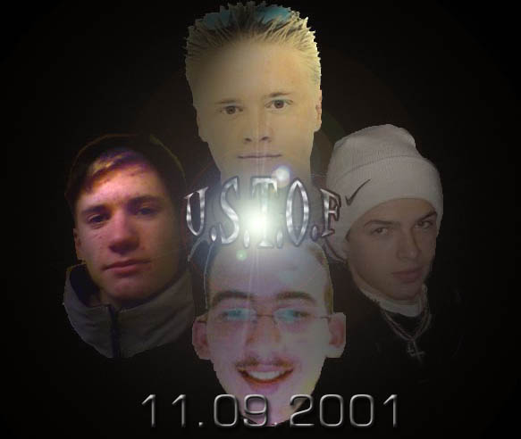
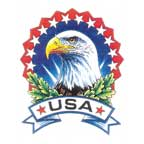

PTITE
PRESENTATION
-----Salut
moi c est lionel j'ai 16 ans et j ' habite a Franconville depuis 15 ans .Mes
kifs sont bien sur la music et le hip hop en particulier., surtout le rap US
qu es carrement mieux que la merde francaise des NTM et IAM et autres assassins
à deux balle, mais ca m empeche pas de faire tourner sur ma platine du
french sound comme du stomy bugsy ou mc solaar qui fait des textes exelent ,ce
que j'aime aussi c est les States et je pense que j'irai vivre là-bas
dés que je pourrais. Le kif c est que aux usa tu peut te faire des thunes
rapidement en bossant dans la zik.Ici c est la galere et les sales bouffon qui
croient faire du rap en france et parler de la banlieue ils feraient mieux de
faire un tour dans le ghetto americain la bas c est vraiment la zone et les
gars ils ont des couilles face aux keufs ici ca fait les barbots dans les cages
d escalier mais quant y a une descente les mecs c des lapins tellement ils courent
vite.Quant j etais aux states, tous les jours y avait des stomba dans la rue
avec des calibres et ils s en servaient croyez moi j suis resté qu une
semaine avec ma classe mais c etait trop bon j ai rapporte du bon son d la bas
et EMINEM j l ai decouvert avant tout le monde .Vous aurez surement remarqué
que j adore les States et c est pour ca que dans les textes et dans la music
nous nous sommes surtout inspiré du son US d ou le nom du groupe US TOUCH
OF FRANCONVILLE....
Notre
groupe U.S.T.O.F (US TOUCH OF FRANCONVILLE) s est formé y a un an et
est en fait le mix de deux groupe AMERICAN DREAM mon ancien groupe avec DJ HONEYet
GOUDRON celui de jean-baptiste et Salomon, qui durant cette année a rejoint
U.S.T.O.F .Des fois,vous entendrez dans nos songs la voix d une meuf c est le
soeur a JEAN-BAPTISTE .c a me fait penser a un coup de gueule sur le meufs dans
le rap j suis pas choma mais j trouve que le rap feminin c est de la demer et
j parles de Lady Laistee en disant ca qu elle laisse le rap aux keum cette teupu.
Dans les U.S.T.O.c'est moi le " cerveau ". En fait, c'est moi qui
suis chargé d écrire les textes des songs, mais c'est pas moi
qui fait la musique ca cest jean-baptiste et salomon qui font le taf .michel
et stark s occupe des vibes et dj honey des platines c'est lui le celebre dj
keizer que vous avez ptetre entendu mixer au pub L ANTIKA l année dernière
ptin de kif ce soir la ..

Ca
c'est nos tronches moi j suis en haut (lionel),au milieu a gauche c'est jean-baptiste
à droite c'est Dj honey et en bas c'est salomon.
et
pour pas faire de jaloux voila notre voix feminine cécile


NOS
ALBUMS PREFERES
ICI VOILA LE TOP FIVE DE TOUS LES TRUCS QUI NOUS ONT INSPIRES POUR NOTRE ZIK
EN PLUS DES ALBUMS US QUE JE MET AVANT TOUS CA VOILA S KON KIF EN FRANCE .....ET
SURTOUT A FRANCONVILLE....
1.ELTON
JOHN one night only
le meilleur pianiste au monde et un ptin de musicien vachement pro toutes nos
melodies sont inspires de ce type .
2.EMINEM
the eminem show
j en avais tellement de groupe us a mettre que j en ai mis qu un mon prefere
ET LUI C EST UN VRAI MECHANT. (lol)
3.MC SOLAAR cinquieme as
les textes de Claude mc ils sont exelent et j tripe trop a les ecouter j pense
que c est vraiment le meilleur rapeur francais ...
4.MENELIK e pop attitude
on l attendait au tournant apres son premier succes tout baigne et il rivalise
avec les plus grand a ecouter son duo avec asto kiffant .
5.DOC GYNECO solitaire
Si y a un gars cool c est lui des samples trippant une ambiance chaude et incandescante
le doc est toujour la pour une consultation.
6.R KELLY
exelent flow pure son des melodies tripante bref l ariste quoi
7.P.D.D
puffy ou puff daddy ou comme vous voulez rap de facon carré compose des
ziks halucinantes "I'VE BEEN WATCHING U" et sot avec JLO c donc le
type ideal .
LES
GROUPES A EVITER
1.DJ ABDEL
une soit disant teknik de feu zarma c est un bouffon qui frait mieux de laisser
tomber ses platines pour et jouer aux cartes..A BANNIR
2.NTM
et dire que j ecouter ce groupe quand j etais jeune des gars qui parle de la
rue et qui bouffent du caviar.LA PLUS GROSE ARNAQUE DU RAP FRANCAIS.
3.IAM
la meme chose que NTM mais avec l accent et un discour moralisateur je me demande
encore pourquoi ce succes !!!!!
4.IV MY PEOPLE
on nous en avit baucoup parler mais je ne vois pas ce qu on peut en dire sinon
que c est de la bouze et de la rebouze.

REVUE DE PRESSE
INTERVIEW DU GROUPE DANS LE JOURNAL DU LYCEE J.MONET publié a 300 exemplaires
dans le departement
Originaires
de franconville,LES US TOUCH OF FRANCONVILLE ou U.S.T.O.F commencent a se faire
un nom sur la scène hip hop du departement .entretien avec le sympathique
lionel, auteur des chansons du groupes.
peux tu
nous presenter le groupe?
moi c est lionel.Je suis auteur et des fois chanteur, le leader en quelque sorte!Ensuite
ya jean-baptiste qui s occupe de la zik du son quoi , salomon notre chanteur
attitré et dj honey s occupe des scratch des platines et du mix final
lui c est la star !On a 17 ans de moyenne d age.
Comment definirais tu votre musique?
Un copain a nous a qualifié notre musique de californian hip hop!! j
aime bien.
Quelles sont les influences principales des USTOF ?
quand le groupe s est formé on a commencé par reprendre des morceaux
de EMINEM ou de grosses pointures francaise comme solaar.Mais on a tres vite
commence a composer des chansons inspirées de groupes us mais avec des
paroles en francais.Globalement on trouve que la scene francaise c est de la
merde!!!
Vous etes le seul groupe de rap du lycée c est pas trop difficile?
au contraire ca nous motive encore plus !!! et ca nous pousse a encore plus
nous investir dans la musique.
Pour finir qu es ce que tu retiendras de cette année?
sans hesitation les atentats aux etats unis ca nous a tous beaucoup choqué
et on es en train de composer une chanson dessus
le mot de la fin?
R@P DA WORLD...
interview retranscris par salomon